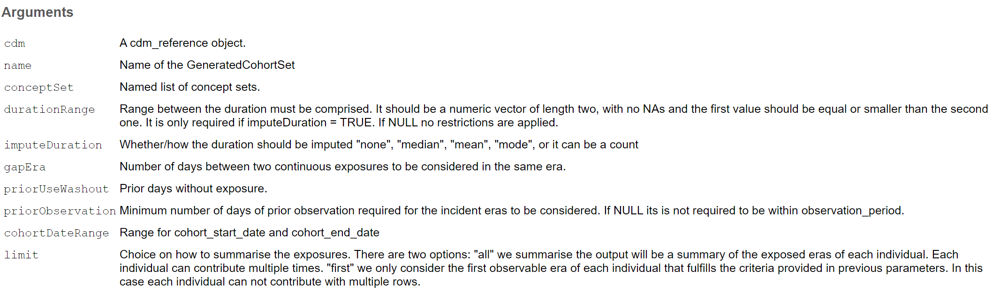
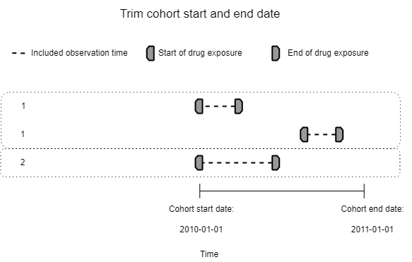

DrugUtilisation
Conduct Drug Utilisation Studies using the OMOP Common Data Model


Introduction
Drug utilisation studies (DUS) were defined by the World Health Organization as studying the marketing, distribution, prescription, and use of medicinal products in a society, with special emphasis on the resulting medical and socioeconomic consequences (WHO, 2003).
This package aims to standardise and provide the tools to conduct Drug Utilisation studies as of the Darwin-EU Catalogue of Standard Analytics.

Functionalities
Create cohort of drug user
Compute daily dose for a given exposure.
Identify potential indications
Summarise drug use
Identify alternative treatments
Analyse treatment discontinuation (under development)
Create a reference to a cdm object
For this example we are going to use
library(DBI)
library(duckdb)
library(CDMConnector)
library(dplyr)
library(here)
# downloadEunomiaData(pathToData = here(), overwrite = TRUE)
# Sys.setenv("EUNOMIA_DATA_FOLDER" = here())
db <- dbConnect(duckdb(), dbdir = eunomia_dir())
cdm <- cdmFromCon(con = db, cdmSchema = "main", writeSchema = "main")Fix eunomia problems with drugs
Add a drug_strength table:
x <- read.csv("https://raw.githubusercontent.com/darwin-eu-dev/DrugUtilisation/main/extras/mock_drug_strength.csv")
cdm <- insertTable(cdm = cdm, name = "drug_strength", table = x)Generate a drug cohort
To generate a drug cohort we need a conceptSet (named list of concepts). Each element will be a different cohort, so we can instantiate multiple cohorts following the same logit at the same time.
Methods to create a conceptSet:
read it from JSON CodelistGenerator::codesFromConceptSet
create from an ingredient CodelistGenerator::getDrugIngredientCodes
create from a text search CodelistGenerator::getCandidateCodes
custom creation
codelist |> omopgenerics::newCodelist()
- concept1 (4 codes)
- concept2 (3 codes)Generate a drug cohort
For this example we are going to use all records of acteaminophen:
library(CodelistGenerator)
codelist <- getDrugIngredientCodes(cdm, "acetaminophen")
codelist
- acetaminophen (7 codes)Generate a drug cohort
Once we have our conceptSet we can create a simple cohort:
library(DrugUtilisation)
cdm <- generateDrugUtilisationCohortSet(
cdm = cdm,
name = "dus_cohort",
conceptSet = codelist
)The results is the cdm object with the new cohort instantiated.
cdm── # OMOP CDM reference (duckdb) of Synthea synthetic health database ────────────────────────────────────────────────────────────• omop tables: person, observation_period, visit_occurrence, visit_detail, condition_occurrence, drug_exposure,
procedure_occurrence, device_exposure, measurement, observation, death, note, note_nlp, specimen, fact_relationship, location,
care_site, provider, payer_plan_period, cost, drug_era, dose_era, condition_era, metadata, cdm_source, concept, vocabulary,
domain, concept_class, concept_relationship, relationship, concept_synonym, concept_ancestor, source_to_concept_map,
drug_strength• cohort tables: dus_cohort• achilles tables: -• other tables: -cdm$dus_cohort# Source: SQL [?? x 4]
# Database: DuckDB v0.10.0 [martics@Windows 10 x64:R 4.2.1/C:\Users\martics\AppData\Local\Temp\RtmpszDm0P\file4f5477b940da.duckdb]
cohort_definition_id subject_id cohort_start_date cohort_end_date
<int> <int> <date> <date>
1 1 32 1998-10-02 1998-10-09
2 1 97 2015-03-23 2015-04-06
3 1 163 1975-04-26 1975-07-26
4 1 183 1983-01-26 1983-02-09
5 1 338 1995-06-01 1995-06-15
6 1 351 1985-10-18 1985-11-01
7 1 351 2017-11-17 2017-12-01
8 1 364 1988-05-05 1988-05-12
9 1 440 1983-09-18 1983-09-25
10 1 479 1989-05-11 1989-05-25
# ℹ more rowsGenerate a drug cohort
We can check some metadata of the cohort:
settings(cdm$dus_cohort)# A tibble: 1 × 11
cohort_definition_id cohort_name duration_range_min duration_range_max impute_duration gap_era prior_use_washout
<int> <chr> <chr> <chr> <chr> <chr> <chr>
1 1 acetaminophen 1 Inf none 0 0
# ℹ 4 more variables: prior_observation <chr>, cohort_date_range_start <chr>, cohort_date_range_end <chr>, limit <chr>cohortCount(cdm$dus_cohort)# A tibble: 1 × 3
cohort_definition_id number_records number_subjects
<int> <int> <int>
1 1 13908 2679Generate a drug cohort
attrition(cdm$dus_cohort)# A tibble: 1 × 7
cohort_definition_id number_records number_subjects reason_id reason excluded_records excluded_subjects
<int> <int> <int> <int> <chr> <int> <int>
1 1 13908 2679 1 Initial qualifying events 0 0Generate a drug cohort
summary(cdm$dus_cohort)# A tibble: 6 × 13
result_id cdm_name group_name group_level strata_name strata_level variable_name variable_level estimate_name estimate_type
<int> <chr> <chr> <chr> <chr> <chr> <chr> <chr> <chr> <chr>
1 1 Synthea synt… cohort_na… acetaminop… overall overall number_recor… <NA> count integer
2 1 Synthea synt… cohort_na… acetaminop… overall overall number_subje… <NA> count integer
3 2 Synthea synt… cohort_na… acetaminop… reason Initial qua… number_recor… <NA> count integer
4 2 Synthea synt… cohort_na… acetaminop… reason Initial qua… number_subje… <NA> count integer
5 2 Synthea synt… cohort_na… acetaminop… reason Initial qua… excluded_rec… <NA> count integer
6 2 Synthea synt… cohort_na… acetaminop… reason Initial qua… excluded_sub… <NA> count integer
# ℹ 3 more variables: estimate_value <chr>, additional_name <chr>, additional_level <chr>Generate a drug cohort
Let’s explore the parameters:
?generateDrugUtilisationCohortSet
Generate a drug cohort
Generate a drug cohort
Generate a drug cohort
Generate a drug cohort
Generate a drug cohort
Generate a drug cohort
cdm <- generateDrugUtilisationCohortSet(
cdm = cdm,
name = "dus_new_user",
conceptSet = codelist,
gapEra = 30, # 30 day separated prescriptions will be joined
priorUseWashout = 365, # no use in the prior 365 days
priorObservation = 365, # in the database for more than 365 dyas before start date
cohortDateRange = as.Date(c("2000-01-01", "2019-12-31")), # range of allowed dates
limit = "first" # limit to only the first record per person
)Generate a drug cohort
Rows: 1
Columns: 11
$ cohort_definition_id <int> 1
$ cohort_name <chr> "acetaminophen"
$ duration_range_min <chr> "1"
$ duration_range_max <chr> "Inf"
$ impute_duration <chr> "none"
$ gap_era <chr> "30"
$ prior_use_washout <chr> "365"
$ prior_observation <chr> "365"
$ cohort_date_range_start <chr> "2000-01-01"
$ cohort_date_range_end <chr> "2019-12-31"
$ limit <chr> "first"Generate a drug cohort
cohortCount(cdm$dus_new_user) %>% glimpse()Rows: 1
Columns: 3
$ cohort_definition_id <int> 1
$ number_records <int> 1979
$ number_subjects <int> 1979Generate a drug cohort
Rows: 7
Columns: 7
$ cohort_definition_id <int> 1, 1, 1, 1, 1, 1, 1
$ number_records <int> 13908, 13860, 12907, 12533, 3332, 3332, 1979
$ number_subjects <int> 2679, 2679, 2679, 2674, 1979, 1979, 1979
$ reason_id <int> 1, 2, 3, 4, 5, 6, 7
$ reason <chr> "Initial qualifying events", "join exposures separated by 30 or less days", "require prior use wash…
$ excluded_records <int> 0, 48, 953, 374, 9201, 0, 1353
$ excluded_subjects <int> 0, 0, 0, 5, 695, 0, 0Generate a drug cohort
Some helpers
?generateIngredientCohortSet?generateAtcCohortSetDealing with daily dose
This function works if:
- The relation between the
drug_concept_idandingredient_concept_id, can be established thoughdrug_strengthtable by one of the 126 identified valid patterns. And if they have a formula assigned. Currently 17 patterns have a formula assigned you can check them here:
# A tibble: 41 × 9
pattern_id amount amount_unit numerator numerator_unit denominator denominator_unit formula_name formula
<dbl> <chr> <chr> <chr> <chr> <chr> <chr> <chr> <chr>
1 1 <NA> <NA> number microgram number hour time based with d… if (de…
2 2 <NA> <NA> number milligram number hour time based with d… if (de…
3 3 <NA> <NA> number unit number hour time based with d… if (de…
4 4 <NA> <NA> number microgram <NA> hour time based no den… 24 * n…
5 5 <NA> <NA> number milligram <NA> hour time based no den… 24 * n…
6 6 number international unit <NA> <NA> <NA> <NA> fixed amount form… quanti…
7 7 number microgram <NA> <NA> <NA> <NA> fixed amount form… quanti…
8 8 number milliequivalent <NA> <NA> <NA> <NA> fixed amount form… quanti…
9 9 number milligram <NA> <NA> <NA> <NA> fixed amount form… quanti…
10 10 number milliliter <NA> <NA> <NA> <NA> fixed amount form… quanti…
11 11 number unit <NA> <NA> <NA> <NA> fixed amount form… quanti…
12 12 <NA> <NA> number international unit number milligram concentration for… quanti…
13 13 <NA> <NA> number international unit number milliliter concentration for… quanti…
14 14 <NA> <NA> number milliequivalent number milliliter concentration for… quanti…
15 15 <NA> <NA> number milligram number Actuation concentration for… quanti…
16 16 <NA> <NA> number milligram number liter concentration for… quanti…
17 17 <NA> <NA> number milligram number milligram concentration for… quanti…
18 18 <NA> <NA> number milligram number milliliter concentration for… quanti…
19 19 <NA> <NA> number milligram number square centimeter concentration for… quanti…
20 20 <NA> <NA> number milliliter number milligram concentration for… quanti…
21 21 <NA> <NA> number milliliter number milliliter concentration for… quanti…
22 22 <NA> <NA> number unit number Actuation concentration for… quanti…
23 23 <NA> <NA> number unit number milligram concentration for… quanti…
24 24 <NA> <NA> number unit number milliliter concentration for… quanti…
25 25 <NA> <NA> number unit number square centimeter concentration for… quanti…
26 26 <NA> <NA> number international unit <NA> milligram concentration for… quanti…
27 27 <NA> <NA> number international unit <NA> milliliter concentration for… quanti…
28 28 <NA> <NA> number mega-international unit <NA> milliliter concentration for… quanti…
29 29 <NA> <NA> number milliequivalent <NA> milligram concentration for… quanti…
30 30 <NA> <NA> number milliequivalent <NA> milliliter concentration for… quanti…
31 31 <NA> <NA> number milligram <NA> Actuation concentration for… quanti…
32 32 <NA> <NA> number milligram <NA> liter concentration for… quanti…
33 33 <NA> <NA> number milligram <NA> milligram concentration for… quanti…
34 34 <NA> <NA> number milligram <NA> milliliter concentration for… quanti…
35 35 <NA> <NA> number milligram <NA> square centimeter concentration for… quanti…
36 36 <NA> <NA> number milliliter <NA> milligram concentration for… quanti…
37 37 <NA> <NA> number milliliter <NA> milliliter concentration for… quanti…
38 38 <NA> <NA> number unit <NA> Actuation concentration for… quanti…
39 39 <NA> <NA> number unit <NA> milligram concentration for… quanti…
40 40 <NA> <NA> number unit <NA> milliliter concentration for… quanti…
41 41 <NA> <NA> number unit <NA> square centimeter concentration for… quanti…daily dose
We can add daily dose to drug_exposure like this:
cdm$drug_exposure %>%
addDailyDose(ingredientConceptId = 1125315) %>%
glimpse()Rows: ??
Columns: 25
Database: DuckDB v0.10.0 [martics@Windows 10 x64:R 4.2.1/C:\Users\martics\AppData\Local\Temp\RtmpszDm0P\file4f5477b940da.duckdb]
$ drug_exposure_id <int> 47027, 10459, 10524, 9646, 9653, 31813, 13969, 60871, 14061, 60753, 6923, 47028, 10525, 340…
$ person_id <int> 3895, 871, 877, 806, 806, 2636, 1169, 5063, 1175, 5051, 582, 3896, 877, 2815, 1746, 2230, 2…
$ drug_concept_id <int> 40162522, 1127078, 1127433, 1127078, 40229134, 1127433, 1127433, 1127433, 40231925, 1127433…
$ drug_exposure_start_date <date> 1982-03-30, 1967-11-09, 1992-05-28, 1962-07-02, 2009-01-18, 2017-08-22, 1937-12-03, 2010-0…
$ drug_exposure_start_datetime <dttm> 1982-03-30, 1967-11-09, 1992-05-28, 1962-07-02, 2009-01-18, 2017-08-22, 1937-12-03, 2010-0…
$ drug_exposure_end_date <date> 1982-03-30, 1968-01-08, 1992-06-11, 1962-07-30, 2009-01-25, 2017-09-05, 1937-12-17, 2010-0…
$ drug_exposure_end_datetime <dttm> 1982-03-30, 1968-01-08, 1992-06-11, 1962-07-30, 2009-01-25, 2017-09-05, 1937-12-17, 2010-0…
$ verbatim_end_date <date> NA, 1968-01-08, 1992-06-11, 1962-07-30, 2009-01-25, 2017-09-05, 1937-12-17, 2010-06-04, NA…
$ drug_type_concept_id <int> 38000177, 38000177, 38000177, 38000177, 38000177, 38000177, 38000177, 38000177, 38000177, 3…
$ stop_reason <chr> NA, NA, NA, NA, NA, NA, NA, NA, NA, NA, NA, NA, NA, NA, NA, NA, NA, NA, NA, NA, NA, NA, NA,…
$ refills <int> 0, 0, 0, 0, 0, 0, 0, 0, 0, 0, 0, 0, 0, 0, 0, 0, 0, 0, 0, 0, 0, 0, 0, 0, 0, 0, 0, 0, 0, 0, 0…
$ quantity <int> 0, 60, 14, 28, 7, 14, 14, 14, 0, 35, 7, 14, 14, 7, 14, 30, 7, 14, 7, 21, 14, 7, 14, 35, 14,…
$ days_supply <int> 0, 60, 14, 28, 7, 14, 14, 14, 0, 35, 7, 14, 14, 7, 14, 30, 7, 14, 7, 21, 14, 7, 14, 35, 14,…
$ sig <chr> NA, NA, NA, NA, NA, NA, NA, NA, NA, NA, NA, NA, NA, NA, NA, NA, NA, NA, NA, NA, NA, NA, NA,…
$ route_concept_id <int> 0, 0, 0, 0, 0, 0, 0, 0, 0, 0, 0, 0, 0, 0, 0, 0, 0, 0, 0, 0, 0, 0, 0, 0, 0, 0, 0, 0, 0, 0, 0…
$ lot_number <chr> "0", "0", "0", "0", "0", "0", "0", "0", "0", "0", "0", "0", "0", "0", "0", "0", "0", "0", "…
$ provider_id <int> 0, 0, 0, 0, 0, 0, 0, 0, 0, 0, 0, 0, 0, 0, 0, 0, 0, 0, 0, 0, 0, 0, 0, 0, 0, 0, 0, 0, 0, 0, 0…
$ visit_occurrence_id <int> 259023, 57955, 58440, 53468, 53505, 174469, 77028, 336572, 77481, 335907, 38579, 259140, 58…
$ visit_detail_id <int> 0, 0, 0, 0, 0, 0, 0, 0, 0, 0, 0, 0, 0, 0, 0, 0, 0, 0, 0, 0, 0, 0, 0, 0, 0, 0, 0, 0, 0, 0, 0…
$ drug_source_value <chr> "857005", "282464", "313782", "282464", "1043400", "313782", "313782", "313782", "1049221",…
$ drug_source_concept_id <int> 40162522, 1127078, 1127433, 1127078, 40229134, 1127433, 1127433, 1127433, 40231925, 1127433…
$ route_source_value <chr> NA, NA, NA, NA, NA, NA, NA, NA, NA, NA, NA, NA, NA, NA, NA, NA, NA, NA, NA, NA, NA, NA, NA,…
$ dose_unit_source_value <chr> NA, NA, NA, NA, NA, NA, NA, NA, NA, NA, NA, NA, NA, NA, NA, NA, NA, NA, NA, NA, NA, NA, NA,…
$ daily_dose <dbl> NA, 157.37705, 303.33333, 154.48276, 18.98750, 303.33333, 303.33333, 303.33333, NA, 315.972…
$ unit <chr> "milligram", "milligram", "milligram", "milligram", "milligram", "milligram", "milligram", …!! As drug exposure is a big table it is not recommended to add daily dose to the whole drug_exposure table, first it is important to subset to the subjects and concepts of interest.
daily dose
To see the coverage of an specific ingredient you can compute it as:
dailyDoseCoverage(cdm = cdm, ingredientConceptId = 1125315) %>%
select(-c("result_id", "cdm_name", "group_name", "group_level")) %>%
print(n = Inf)# A tibble: 60 × 9
strata_name strata_level variable_name variable_level estimate_name estimate_type estimate_value additional_name
<chr> <chr> <chr> <chr> <chr> <chr> <chr> <chr>
1 overall overall number recor… <NA> count integer 14205 overall
2 overall overall daily_dose <NA> count_missing integer 697 overall
3 overall overall daily_dose <NA> percentage_m… percentage 4.90672298486… overall
4 overall overall daily_dose <NA> mean numeric 234.787349787… overall
5 overall overall daily_dose <NA> sd numeric 104.686522784… overall
6 overall overall daily_dose <NA> min numeric 18.9875 overall
7 overall overall daily_dose <NA> q05 numeric 18.9875 overall
8 overall overall daily_dose <NA> q25 numeric 152.727272727… overall
9 overall overall daily_dose <NA> median numeric 284.375 overall
10 overall overall daily_dose <NA> q75 numeric 303.333333333… overall
11 overall overall daily_dose <NA> q95 numeric 315.972222222… overall
12 overall overall daily_dose <NA> max numeric 375 overall
13 unit milligram number recor… <NA> count integer 14205 overall
14 unit milligram daily_dose <NA> count_missing integer 697 overall
15 unit milligram daily_dose <NA> percentage_m… percentage 4.90672298486… overall
16 unit milligram daily_dose <NA> mean numeric 234.787349787… overall
17 unit milligram daily_dose <NA> sd numeric 104.686522784… overall
18 unit milligram daily_dose <NA> min numeric 18.9875 overall
19 unit milligram daily_dose <NA> q05 numeric 18.9875 overall
20 unit milligram daily_dose <NA> q25 numeric 152.727272727… overall
21 unit milligram daily_dose <NA> median numeric 284.375 overall
22 unit milligram daily_dose <NA> q75 numeric 303.333333333… overall
23 unit milligram daily_dose <NA> q95 numeric 315.972222222… overall
24 unit milligram daily_dose <NA> max numeric 375 overall
25 route &&& unit NA &&& mill… number recor… <NA> count integer 14205 overall
26 route &&& unit NA &&& mill… daily_dose <NA> count_missing integer 697 overall
27 route &&& unit NA &&& mill… daily_dose <NA> percentage_m… percentage 4.90672298486… overall
28 route &&& unit NA &&& mill… daily_dose <NA> mean numeric 234.787349787… overall
29 route &&& unit NA &&& mill… daily_dose <NA> sd numeric 104.686522784… overall
30 route &&& unit NA &&& mill… daily_dose <NA> min numeric 18.9875 overall
31 route &&& unit NA &&& mill… daily_dose <NA> q05 numeric 18.9875 overall
32 route &&& unit NA &&& mill… daily_dose <NA> q25 numeric 152.727272727… overall
33 route &&& unit NA &&& mill… daily_dose <NA> median numeric 284.375 overall
34 route &&& unit NA &&& mill… daily_dose <NA> q75 numeric 303.333333333… overall
35 route &&& unit NA &&& mill… daily_dose <NA> q95 numeric 315.972222222… overall
36 route &&& unit NA &&& mill… daily_dose <NA> max numeric 375 overall
37 unit &&& route &&& patter… milligram &… number recor… <NA> count integer 1993 overall
38 unit &&& route &&& patter… milligram &… number recor… <NA> count integer 12212 overall
39 unit &&& route &&& patter… milligram &… daily_dose <NA> count_missing integer 2 overall
40 unit &&& route &&& patter… milligram &… daily_dose <NA> count_missing integer 695 overall
41 unit &&& route &&& patter… milligram &… daily_dose <NA> percentage_m… percentage 0.10035122930… overall
42 unit &&& route &&& patter… milligram &… daily_dose <NA> percentage_m… percentage 5.69112348509… overall
43 unit &&& route &&& patter… milligram &… daily_dose <NA> mean numeric 19.6295316423… overall
44 unit &&& route &&& patter… milligram &… daily_dose <NA> mean numeric 271.982731911… overall
45 unit &&& route &&& patter… milligram &… daily_dose <NA> sd numeric 0.63291464828… overall
46 unit &&& route &&& patter… milligram &… daily_dose <NA> sd numeric 58.8791704932… overall
47 unit &&& route &&& patter… milligram &… daily_dose <NA> min numeric 18.9875 overall
48 unit &&& route &&& patter… milligram &… daily_dose <NA> min numeric 148.571428571… overall
49 unit &&& route &&& patter… milligram &… daily_dose <NA> q05 numeric 18.9875 overall
50 unit &&& route &&& patter… milligram &… daily_dose <NA> q05 numeric 149.333333333… overall
51 unit &&& route &&& patter… milligram &… daily_dose <NA> q25 numeric 18.9875 overall
52 unit &&& route &&& patter… milligram &… daily_dose <NA> q25 numeric 284.375 overall
53 unit &&& route &&& patter… milligram &… daily_dose <NA> median numeric 20.2533333333… overall
54 unit &&& route &&& patter… milligram &… daily_dose <NA> median numeric 303.333333333… overall
55 unit &&& route &&& patter… milligram &… daily_dose <NA> q75 numeric 20.2533333333… overall
56 unit &&& route &&& patter… milligram &… daily_dose <NA> q75 numeric 303.333333333… overall
57 unit &&& route &&& patter… milligram &… daily_dose <NA> q95 numeric 20.2533333333… overall
58 unit &&& route &&& patter… milligram &… daily_dose <NA> q95 numeric 316.447368421… overall
59 unit &&& route &&& patter… milligram &… daily_dose <NA> max numeric 20.2533333333… overall
60 unit &&& route &&& patter… milligram &… daily_dose <NA> max numeric 375 overall
# ℹ 1 more variable: additional_level <chr>Characterisation
Characterise drug use
We have a function to add columns related to drugUse:
cdm$dus_new_user %>%
addDrugUse(
ingredientConceptId = 1125315,
duration = FALSE,
quantity = FALSE,
dose = FALSE
)# Source: table<og_010_1718472667> [?? x 6]
# Database: DuckDB v0.10.0 [martics@Windows 10 x64:R 4.2.1/C:\Users\martics\AppData\Local\Temp\RtmpszDm0P\file4f5477b940da.duckdb]
cohort_definition_id subject_id cohort_start_date cohort_end_date number_exposures number_eras
<int> <int> <date> <date> <dbl> <dbl>
1 1 3 2010-08-27 2010-10-26 1 1
2 1 38 2000-01-01 2000-01-07 1 1
3 1 82 2004-04-05 2004-04-19 1 1
4 1 94 2015-11-30 2015-12-14 1 1
5 1 152 2000-10-23 2000-11-22 1 1
6 1 304 2003-09-03 2003-09-10 1 1
7 1 311 2008-01-04 2008-01-18 1 1
8 1 339 2008-12-13 2008-12-27 1 1
9 1 370 2002-10-12 2002-11-02 1 1
10 1 488 2002-04-01 2002-04-15 1 1
# ℹ more rowsnumber_exposure and number_eras are always computed.
Characterise drug use
duartion = TRUE adds duration and impute_duration_percentage fields
cdm$dus_new_user %>%
addDrugUse(
ingredientConceptId = 1125315,
duration = TRUE,
quantity = FALSE,
dose = FALSE
) %>%
select(-c("number_exposures", "number_eras"))# Source: SQL [?? x 6]
# Database: DuckDB v0.10.0 [martics@Windows 10 x64:R 4.2.1/C:\Users\martics\AppData\Local\Temp\RtmpszDm0P\file4f5477b940da.duckdb]
cohort_definition_id subject_id cohort_start_date cohort_end_date duration impute_duration_percentage
<int> <int> <date> <date> <dbl> <dbl>
1 1 3 2010-08-27 2010-10-26 61 0
2 1 38 2000-01-01 2000-01-07 7 0
3 1 82 2004-04-05 2004-04-19 15 0
4 1 94 2015-11-30 2015-12-14 15 0
5 1 152 2000-10-23 2000-11-22 31 0
6 1 304 2003-09-03 2003-09-10 8 0
7 1 311 2008-01-04 2008-01-18 15 0
8 1 339 2008-12-13 2008-12-27 15 0
9 1 370 2002-10-12 2002-11-02 22 0
10 1 488 2002-04-01 2002-04-15 15 0
# ℹ more rowsCharacterise drug use
quantity = TRUE adds initial_quantity and cumulative_quantity fields
cdm$dus_new_user %>%
addDrugUse(
ingredientConceptId = 1125315,
duration = FALSE,
quantity = TRUE,
dose = FALSE
) %>%
select(-c("number_exposures", "number_eras"))# Source: SQL [?? x 6]
# Database: DuckDB v0.10.0 [martics@Windows 10 x64:R 4.2.1/C:\Users\martics\AppData\Local\Temp\RtmpszDm0P\file4f5477b940da.duckdb]
cohort_definition_id subject_id cohort_start_date cohort_end_date cumulative_quantity initial_quantity
<int> <int> <date> <date> <dbl> <dbl>
1 1 3 2010-08-27 2010-10-26 60 60
2 1 38 2000-01-01 2000-01-07 14 14
3 1 82 2004-04-05 2004-04-19 14 14
4 1 94 2015-11-30 2015-12-14 14 14
5 1 152 2000-10-23 2000-11-22 30 30
6 1 304 2003-09-03 2003-09-10 7 7
7 1 311 2008-01-04 2008-01-18 14 14
8 1 339 2008-12-13 2008-12-27 14 14
9 1 370 2002-10-12 2002-11-02 21 21
10 1 488 2002-04-01 2002-04-15 14 14
# ℹ more rowsCharacterise drug use
dose = TRUE adds impute_daily_dose_percentage, initial_daily_dose and cumulative_dose fields
cdm$dus_new_user %>%
addDrugUse(
ingredientConceptId = 1125315,
duration = FALSE,
quantity = FALSE,
dose = TRUE
) %>%
select(-c("number_exposures", "number_eras"))# Source: SQL [?? x 7]
# Database: DuckDB v0.10.0 [martics@Windows 10 x64:R 4.2.1/C:\Users\martics\AppData\Local\Temp\RtmpszDm0P\file4f5477b940da.duckdb]
cohort_definition_id subject_id cohort_start_date cohort_end_date impute_daily_dose_percentage initial_daily_dose_milligram
<int> <int> <date> <date> <dbl> <dbl>
1 1 3 2010-08-27 2010-10-26 0 320.
2 1 38 2000-01-01 2000-01-07 0 303.
3 1 82 2004-04-05 2004-04-19 0 303.
4 1 94 2015-11-30 2015-12-14 0 303.
5 1 152 2000-10-23 2000-11-22 0 315.
6 1 304 2003-09-03 2003-09-10 0 19.0
7 1 311 2008-01-04 2008-01-18 0 303.
8 1 339 2008-12-13 2008-12-27 0 303.
9 1 370 2002-10-12 2002-11-02 0 310.
10 1 488 2002-04-01 2002-04-15 0 20.3
# ℹ more rows
# ℹ 1 more variable: cumulative_dose_milligram <dbl>Characterise drug use
We can make some decisions to solve how we threat gaps (not exposed periods):
Characterise drug use

Characterise drug use
cdm$dus_new_user %>%
addDrugUse(
ingredientConceptId = 1125315,
eraJoinMode = "zero",
sameIndexMode = "sum"
)# Source: table<og_024_1718472694> [?? x 13]
# Database: DuckDB v0.10.0 [martics@Windows 10 x64:R 4.2.1/C:\Users\martics\AppData\Local\Temp\RtmpszDm0P\file4f5477b940da.duckdb]
cohort_definition_id subject_id cohort_start_date cohort_end_date duration number_exposures cumulative_quantity
<int> <int> <date> <date> <dbl> <dbl> <dbl>
1 1 3 2010-08-27 2010-10-26 61 1 60
2 1 38 2000-01-01 2000-01-07 7 1 14
3 1 82 2004-04-05 2004-04-19 15 1 14
4 1 94 2015-11-30 2015-12-14 15 1 14
5 1 152 2000-10-23 2000-11-22 31 1 30
6 1 304 2003-09-03 2003-09-10 8 1 7
7 1 311 2008-01-04 2008-01-18 15 1 14
8 1 339 2008-12-13 2008-12-27 15 1 14
9 1 370 2002-10-12 2002-11-02 22 1 21
10 1 488 2002-04-01 2002-04-15 15 1 14
# ℹ more rows
# ℹ 6 more variables: initial_quantity <dbl>, impute_duration_percentage <dbl>, number_eras <dbl>,
# impute_daily_dose_percentage <dbl>, initial_daily_dose_milligram <dbl>, cumulative_dose_milligram <dbl>Characterise drug use
We can summarise all this information grouped by cohorts in a summarisedResult object:
cdm$dus_new_user %>%
addDrugUse(ingredientConceptId = 1125315) %>%
summariseDrugUse() %>%
select(-"strata_name", -"strata_level") %>%
print(n = Inf)# A tibble: 101 × 11
result_id cdm_name group_name group_level variable_name variable_level estimate_name estimate_type estimate_value
<int> <chr> <chr> <chr> <chr> <chr> <chr> <chr> <chr>
1 1 Synthea synthetic he… cohort_na… acetaminop… number recor… <NA> count integer 1979
2 1 Synthea synthetic he… cohort_na… acetaminop… number subje… <NA> count integer 1979
3 1 Synthea synthetic he… cohort_na… acetaminop… duration <NA> min numeric 1
4 1 Synthea synthetic he… cohort_na… acetaminop… duration <NA> q05 numeric 1.90000000000…
5 1 Synthea synthetic he… cohort_na… acetaminop… duration <NA> q25 numeric 8
6 1 Synthea synthetic he… cohort_na… acetaminop… duration <NA> median numeric 15
7 1 Synthea synthetic he… cohort_na… acetaminop… duration <NA> q75 numeric 15
8 1 Synthea synthetic he… cohort_na… acetaminop… duration <NA> q95 numeric 38
9 1 Synthea synthetic he… cohort_na… acetaminop… duration <NA> max numeric 128
10 1 Synthea synthetic he… cohort_na… acetaminop… duration <NA> mean numeric 16.4537645275…
11 1 Synthea synthetic he… cohort_na… acetaminop… duration <NA> sd numeric 15.5892764641…
12 1 Synthea synthetic he… cohort_na… acetaminop… duration <NA> count_missing integer 0
13 1 Synthea synthetic he… cohort_na… acetaminop… duration <NA> percentage_m… percentage 0
14 1 Synthea synthetic he… cohort_na… acetaminop… number_expos… <NA> min numeric 1
15 1 Synthea synthetic he… cohort_na… acetaminop… number_expos… <NA> q05 numeric 1
16 1 Synthea synthetic he… cohort_na… acetaminop… number_expos… <NA> q25 numeric 1
17 1 Synthea synthetic he… cohort_na… acetaminop… number_expos… <NA> median numeric 1
18 1 Synthea synthetic he… cohort_na… acetaminop… number_expos… <NA> q75 numeric 1
19 1 Synthea synthetic he… cohort_na… acetaminop… number_expos… <NA> q95 numeric 1
20 1 Synthea synthetic he… cohort_na… acetaminop… number_expos… <NA> max numeric 3
21 1 Synthea synthetic he… cohort_na… acetaminop… number_expos… <NA> mean numeric 1.02475997978…
22 1 Synthea synthetic he… cohort_na… acetaminop… number_expos… <NA> sd numeric 0.16180659945…
23 1 Synthea synthetic he… cohort_na… acetaminop… number_expos… <NA> count_missing integer 0
24 1 Synthea synthetic he… cohort_na… acetaminop… number_expos… <NA> percentage_m… percentage 0
25 1 Synthea synthetic he… cohort_na… acetaminop… cumulative_q… <NA> min numeric 0
26 1 Synthea synthetic he… cohort_na… acetaminop… cumulative_q… <NA> q05 numeric 7
27 1 Synthea synthetic he… cohort_na… acetaminop… cumulative_q… <NA> q25 numeric 7
28 1 Synthea synthetic he… cohort_na… acetaminop… cumulative_q… <NA> median numeric 14
29 1 Synthea synthetic he… cohort_na… acetaminop… cumulative_q… <NA> q75 numeric 14
30 1 Synthea synthetic he… cohort_na… acetaminop… cumulative_q… <NA> q95 numeric 35.1999999999…
31 1 Synthea synthetic he… cohort_na… acetaminop… cumulative_q… <NA> max numeric 100
32 1 Synthea synthetic he… cohort_na… acetaminop… cumulative_q… <NA> mean numeric 15.5219807983…
33 1 Synthea synthetic he… cohort_na… acetaminop… cumulative_q… <NA> sd numeric 15.4241972689…
34 1 Synthea synthetic he… cohort_na… acetaminop… cumulative_q… <NA> count_missing integer 0
35 1 Synthea synthetic he… cohort_na… acetaminop… cumulative_q… <NA> percentage_m… percentage 0
36 1 Synthea synthetic he… cohort_na… acetaminop… initial_quan… <NA> min numeric 0
37 1 Synthea synthetic he… cohort_na… acetaminop… initial_quan… <NA> q05 numeric 7
38 1 Synthea synthetic he… cohort_na… acetaminop… initial_quan… <NA> q25 numeric 7
39 1 Synthea synthetic he… cohort_na… acetaminop… initial_quan… <NA> median numeric 14
40 1 Synthea synthetic he… cohort_na… acetaminop… initial_quan… <NA> q75 numeric 14
41 1 Synthea synthetic he… cohort_na… acetaminop… initial_quan… <NA> q95 numeric 35
42 1 Synthea synthetic he… cohort_na… acetaminop… initial_quan… <NA> max numeric 100
43 1 Synthea synthetic he… cohort_na… acetaminop… initial_quan… <NA> mean numeric 15.3956543708…
44 1 Synthea synthetic he… cohort_na… acetaminop… initial_quan… <NA> sd numeric 15.2265534027…
45 1 Synthea synthetic he… cohort_na… acetaminop… initial_quan… <NA> count_missing integer 0
46 1 Synthea synthetic he… cohort_na… acetaminop… initial_quan… <NA> percentage_m… percentage 0
47 1 Synthea synthetic he… cohort_na… acetaminop… impute_durat… <NA> min numeric 0
48 1 Synthea synthetic he… cohort_na… acetaminop… impute_durat… <NA> q05 numeric 0
49 1 Synthea synthetic he… cohort_na… acetaminop… impute_durat… <NA> q25 numeric 0
50 1 Synthea synthetic he… cohort_na… acetaminop… impute_durat… <NA> median numeric 0
51 1 Synthea synthetic he… cohort_na… acetaminop… impute_durat… <NA> q75 numeric 0
52 1 Synthea synthetic he… cohort_na… acetaminop… impute_durat… <NA> q95 numeric 0
53 1 Synthea synthetic he… cohort_na… acetaminop… impute_durat… <NA> max numeric 0
54 1 Synthea synthetic he… cohort_na… acetaminop… impute_durat… <NA> mean numeric 0
55 1 Synthea synthetic he… cohort_na… acetaminop… impute_durat… <NA> sd numeric 0
56 1 Synthea synthetic he… cohort_na… acetaminop… impute_durat… <NA> count_missing integer 0
57 1 Synthea synthetic he… cohort_na… acetaminop… impute_durat… <NA> percentage_m… percentage 0
58 1 Synthea synthetic he… cohort_na… acetaminop… number_eras <NA> min numeric 1
59 1 Synthea synthetic he… cohort_na… acetaminop… number_eras <NA> q05 numeric 1
60 1 Synthea synthetic he… cohort_na… acetaminop… number_eras <NA> q25 numeric 1
61 1 Synthea synthetic he… cohort_na… acetaminop… number_eras <NA> median numeric 1
62 1 Synthea synthetic he… cohort_na… acetaminop… number_eras <NA> q75 numeric 1
63 1 Synthea synthetic he… cohort_na… acetaminop… number_eras <NA> q95 numeric 1
64 1 Synthea synthetic he… cohort_na… acetaminop… number_eras <NA> max numeric 2
65 1 Synthea synthetic he… cohort_na… acetaminop… number_eras <NA> mean numeric 1.00404244567…
66 1 Synthea synthetic he… cohort_na… acetaminop… number_eras <NA> sd numeric 0.06346762761…
67 1 Synthea synthetic he… cohort_na… acetaminop… number_eras <NA> count_missing integer 0
68 1 Synthea synthetic he… cohort_na… acetaminop… number_eras <NA> percentage_m… percentage 0
69 1 Synthea synthetic he… cohort_na… acetaminop… impute_daily… <NA> min numeric 0
70 1 Synthea synthetic he… cohort_na… acetaminop… impute_daily… <NA> q05 numeric 0
71 1 Synthea synthetic he… cohort_na… acetaminop… impute_daily… <NA> q25 numeric 0
72 1 Synthea synthetic he… cohort_na… acetaminop… impute_daily… <NA> median numeric 0
73 1 Synthea synthetic he… cohort_na… acetaminop… impute_daily… <NA> q75 numeric 0
74 1 Synthea synthetic he… cohort_na… acetaminop… impute_daily… <NA> q95 numeric 50
75 1 Synthea synthetic he… cohort_na… acetaminop… impute_daily… <NA> max numeric 100
76 1 Synthea synthetic he… cohort_na… acetaminop… impute_daily… <NA> mean numeric 5.59204985683…
77 1 Synthea synthetic he… cohort_na… acetaminop… impute_daily… <NA> sd numeric 21.8615099438…
78 1 Synthea synthetic he… cohort_na… acetaminop… impute_daily… <NA> count_missing integer 0
79 1 Synthea synthetic he… cohort_na… acetaminop… impute_daily… <NA> percentage_m… percentage 0
80 1 Synthea synthetic he… cohort_na… acetaminop… initial_dail… <NA> min numeric 18.9875
81 1 Synthea synthetic he… cohort_na… acetaminop… initial_dail… <NA> q05 numeric 18.9875
82 1 Synthea synthetic he… cohort_na… acetaminop… initial_dail… <NA> q25 numeric 284.375
83 1 Synthea synthetic he… cohort_na… acetaminop… initial_dail… <NA> median numeric 303.333333333…
84 1 Synthea synthetic he… cohort_na… acetaminop… initial_dail… <NA> q75 numeric 303.333333333…
85 1 Synthea synthetic he… cohort_na… acetaminop… initial_dail… <NA> q95 numeric 316.281067251…
86 1 Synthea synthetic he… cohort_na… acetaminop… initial_dail… <NA> max numeric 321.782178217…
87 1 Synthea synthetic he… cohort_na… acetaminop… initial_dail… <NA> mean numeric 248.791088712…
88 1 Synthea synthetic he… cohort_na… acetaminop… initial_dail… <NA> sd numeric 108.199579381…
89 1 Synthea synthetic he… cohort_na… acetaminop… initial_dail… <NA> count_missing integer 91
90 1 Synthea synthetic he… cohort_na… acetaminop… initial_dail… <NA> percentage_m… percentage 4.59828196058…
91 1 Synthea synthetic he… cohort_na… acetaminop… cumulative_d… <NA> min numeric Inf
92 1 Synthea synthetic he… cohort_na… acetaminop… cumulative_d… <NA> q05 numeric <NA>
93 1 Synthea synthetic he… cohort_na… acetaminop… cumulative_d… <NA> q25 numeric <NA>
94 1 Synthea synthetic he… cohort_na… acetaminop… cumulative_d… <NA> median numeric <NA>
95 1 Synthea synthetic he… cohort_na… acetaminop… cumulative_d… <NA> q75 numeric <NA>
96 1 Synthea synthetic he… cohort_na… acetaminop… cumulative_d… <NA> q95 numeric <NA>
97 1 Synthea synthetic he… cohort_na… acetaminop… cumulative_d… <NA> max numeric -Inf
98 1 Synthea synthetic he… cohort_na… acetaminop… cumulative_d… <NA> mean numeric NaN
99 1 Synthea synthetic he… cohort_na… acetaminop… cumulative_d… <NA> sd numeric <NA>
100 1 Synthea synthetic he… cohort_na… acetaminop… cumulative_d… <NA> count_missing integer 1979
101 1 Synthea synthetic he… cohort_na… acetaminop… cumulative_d… <NA> percentage_m… percentage 100
# ℹ 2 more variables: additional_name <chr>, additional_level <chr>Indication
First we need to instantiate some indication cohorts, in this case we are going to explore sinusitis and bronchitis:
cdm <- generateConceptCohortSet(
cdm = cdm,
conceptSet = list(sinusitis = c(4294548, 40481087, 257012), bronchitis = c(258780, 260139)),
name = "indications",
limit = "all",
end = 0
)
settings(cdm$indications) %>%
select("cohort_definition_id", "cohort_name") %>%
inner_join(cohortCount(cdm$indications), by = "cohort_definition_id")# A tibble: 2 × 4
cohort_definition_id cohort_name number_records number_subjects
<int> <chr> <int> <int>
1 1 sinusitis 19032 2688
2 2 bronchitis 8232 2546Indication
We have to define a gap (period before index date) that we are interested to assess indication:
Indication
cdm$dus_new_user <- cdm$dus_new_user %>%
addIndication(
indicationCohortName = "indications",
unknownIndicationTable = c("condition_occurrence"),
indicationGap = c(0, 30, Inf)
)
glimpse(cdm$dus_new_user)Rows: ??
Columns: 16
Database: DuckDB v0.10.0 [martics@Windows 10 x64:R 4.2.1/C:\Users\martics\AppData\Local\Temp\RtmpszDm0P\file4f5477b940da.duckdb]
$ cohort_definition_id <int> 1, 1, 1, 1, 1, 1, 1, 1, 1, 1, 1, 1, 1, 1, 1, 1, 1, 1, 1, 1, 1, 1, 1, 1, 1, 1, 1, 1, 1, 1, …
$ subject_id <int> 3, 38, 82, 94, 105, 152, 185, 311, 370, 461, 488, 499, 665, 722, 761, 931, 974, 994, 1058,…
$ cohort_start_date <date> 2010-08-27, 2000-01-01, 2004-04-05, 2015-11-30, 2005-11-11, 2000-10-23, 2015-02-21, 2008-…
$ cohort_end_date <date> 2010-10-26, 2000-01-07, 2004-04-19, 2015-12-14, 2005-11-11, 2000-11-22, 2015-03-28, 2008-…
$ indication_gap_0_bronchitis <dbl> 0, 0, 1, 1, 0, 0, 0, 1, 0, 1, 1, 1, 1, 0, 1, 1, 0, 1, 1, 1, 1, 1, 1, 1, 1, 0, 0, 1, 1, 1, …
$ indication_gap_0_sinusitis <dbl> 0, 0, 0, 0, 0, 0, 0, 0, 0, 0, 0, 0, 0, 0, 0, 0, 0, 0, 0, 0, 0, 0, 0, 0, 0, 0, 0, 0, 0, 0, …
$ indication_gap_0_none <dbl> 0, 1, 0, 0, 0, 0, 0, 0, 0, 0, 0, 0, 0, 0, 0, 0, 0, 0, 0, 0, 0, 0, 0, 0, 0, 0, 0, 0, 0, 0, …
$ indication_gap_0_unknown <dbl> 1, 0, 0, 0, 1, 1, 1, 0, 1, 0, 0, 0, 0, 1, 0, 0, 1, 0, 0, 0, 0, 0, 0, 0, 0, 1, 1, 0, 0, 0, …
$ indication_gap_30_sinusitis <dbl> 0, 0, 0, 0, 0, 0, 0, 1, 0, 0, 0, 0, 1, 0, 0, 0, 0, 0, 0, 0, 0, 0, 0, 0, 0, 0, 0, 0, 0, 0, …
$ indication_gap_30_bronchitis <dbl> 0, 1, 1, 1, 0, 0, 0, 1, 0, 1, 1, 1, 1, 0, 1, 1, 0, 1, 1, 1, 1, 1, 1, 1, 1, 0, 0, 1, 1, 1, …
$ indication_gap_30_none <dbl> 0, 0, 0, 0, 0, 0, 0, 0, 0, 0, 0, 0, 0, 0, 0, 0, 0, 0, 0, 0, 0, 0, 0, 0, 0, 0, 0, 0, 0, 0, …
$ indication_gap_30_unknown <dbl> 1, 0, 0, 0, 1, 1, 1, 0, 1, 0, 0, 0, 0, 1, 0, 0, 1, 0, 0, 0, 0, 0, 0, 0, 0, 1, 1, 0, 0, 0, …
$ indication_gap_inf_bronchitis <dbl> 1, 1, 1, 1, 0, 1, 1, 1, 0, 1, 1, 1, 1, 1, 1, 1, 0, 1, 1, 1, 1, 1, 1, 1, 1, 1, 1, 1, 1, 1, …
$ indication_gap_inf_sinusitis <dbl> 1, 1, 1, 1, 1, 1, 1, 1, 1, 1, 1, 1, 1, 1, 1, 1, 1, 1, 1, 1, 1, 1, 1, 1, 1, 1, 1, 1, 1, 1, …
$ indication_gap_inf_none <dbl> 0, 0, 0, 0, 0, 0, 0, 0, 0, 0, 0, 0, 0, 0, 0, 0, 0, 0, 0, 0, 0, 0, 0, 0, 0, 0, 0, 0, 0, 0, …
$ indication_gap_inf_unknown <dbl> 0, 0, 0, 0, 0, 0, 0, 0, 0, 0, 0, 0, 0, 0, 0, 0, 0, 0, 0, 0, 0, 0, 0, 0, 0, 0, 0, 0, 0, 0, …Indication
We can join the indications if we need later to stratify by them:
cdm$dus_new_user %>%
indicationToStrata()# Source: SQL [?? x 7]
# Database: DuckDB v0.10.0 [martics@Windows 10 x64:R 4.2.1/C:\Users\martics\AppData\Local\Temp\RtmpszDm0P\file4f5477b940da.duckdb]
cohort_definition_id subject_id cohort_start_date cohort_end_date indication_gap_0 indication_gap_30 indication_gap_inf
<int> <int> <date> <date> <chr> <chr> <chr>
1 1 3 2010-08-27 2010-10-26 Unknown Unknown Bronchitis and Sin…
2 1 38 2000-01-01 2000-01-07 None Bronchitis Bronchitis and Sin…
3 1 82 2004-04-05 2004-04-19 Bronchitis Bronchitis Bronchitis and Sin…
4 1 94 2015-11-30 2015-12-14 Bronchitis Bronchitis Bronchitis and Sin…
5 1 105 2005-11-11 2005-11-11 Unknown Unknown Sinusitis
6 1 152 2000-10-23 2000-11-22 Unknown Unknown Bronchitis and Sin…
7 1 185 2015-02-21 2015-03-28 Unknown Unknown Bronchitis and Sin…
8 1 311 2008-01-04 2008-01-18 Bronchitis Sinusitis and Bronchitis Bronchitis and Sin…
9 1 370 2002-10-12 2002-11-02 Unknown Unknown Sinusitis
10 1 461 2011-03-11 2011-03-18 Bronchitis Bronchitis Bronchitis and Sin…
# ℹ more rowsIndication
Summarise indication into a summarisedResult object:
cdm$dus_new_user %>%
summariseIndication() %>%
select("variable_name", "variable_level", "estimate_name", "estimate_value") |>
print(n = Inf)# A tibble: 26 × 4
variable_name variable_level estimate_name estimate_value
<chr> <chr> <chr> <chr>
1 number records <NA> count 1979
2 number subjects <NA> count 1979
3 Indication on index date Bronchitis count 1373
4 Indication on index date Bronchitis percentage 69.3784739767559
5 Indication on index date Sinusitis count <NA>
6 Indication on index date Sinusitis percentage <NA>
7 Indication on index date None count 48
8 Indication on index date None percentage 2.42546740778171
9 Indication on index date Unknown count 558
10 Indication on index date Unknown percentage 28.1960586154624
11 Indication during prior 30 days Sinusitis count 24
12 Indication during prior 30 days Sinusitis percentage 1.21273370389085
13 Indication during prior 30 days Bronchitis count 1395
14 Indication during prior 30 days Bronchitis percentage 70.4901465386559
15 Indication during prior 30 days None count <NA>
16 Indication during prior 30 days None percentage <NA>
17 Indication during prior 30 days Unknown count 580
18 Indication during prior 30 days Unknown percentage 29.3077311773623
19 Indication any time prior Bronchitis count 1902
20 Indication any time prior Bronchitis percentage 96.1091460333502
21 Indication any time prior Sinusitis count 1958
22 Indication any time prior Sinusitis percentage 98.9388580090955
23 Indication any time prior None count 0
24 Indication any time prior None percentage 0
25 Indication any time prior Unknown count <NA>
26 Indication any time prior Unknown percentage <NA> Alternative treatments
You can summarise other treatments after a certain cohort, for example we have our cohort of acetaminophen, which are the treatments that are used.
getDrugIngredientCodes(cdm = cdm)
- ondansetron (2 codes)
- meperidine (2 codes)
- loratadine (3 codes)
- morphine (2 codes)
- aspirin (2 codes)
- naproxen (3 codes)
- celecoxib (1 codes)
- dextromethorphan (2 codes)
- diclofenac (1 codes)
- oxycodone (2 codes)
along with 81 more codelistsAlternative treatments
x <- cdm$dus_new_user |>
summariseTreatmentFromConceptSet(
treatmentConceptSet = getDrugIngredientCodes(cdm = cdm),
window = list(c(0, 90), c(91, 180), c(181, 270), c(271, 360))
)
x |>
select("variable_name", "estimate_name", "estimate_value", "additional_name", "additional_level")# A tibble: 736 × 5
variable_name estimate_name estimate_value additional_name additional_level
<chr> <chr> <chr> <chr> <chr>
1 acetaminophen count 1979 window 0 to 90
2 acetaminophen percentage 100 window 0 to 90
3 albuterol count 2 window 0 to 90
4 albuterol percentage 0.101061141990904 window 0 to 90
5 alendronate count 1 window 0 to 90
6 alendronate percentage 0.0505305709954522 window 0 to 90
7 alfentanil count 1 window 0 to 90
8 alfentanil percentage 0.0505305709954522 window 0 to 90
9 alteplase count 0 window 0 to 90
10 alteplase percentage 0 window 0 to 90
# ℹ 726 more rowsAlternative treatments
library(ggplot2)
xx <- x |>
filter(estimate_name == "percentage") |>
mutate(estimate_value = as.numeric(estimate_value)) |>
select(variable_name, window = additional_level, estimate_value) |>
mutate(window = factor(window, levels = c("0 to 90", "91 to 180", "181 to 270", "271 to 360")))
xx |>
filter(variable_name %in% unique(xx$variable_name[xx$estimate_value > 1])) |>
ggplot(aes(x = variable_name, y = estimate_value, color = variable_name, fill = variable_name)) +
geom_bar(stat="identity") +
coord_flip() +
facet_grid( ~ window) +
theme(legend.position = "none")Alternative treatments
Treatment discontinuation
We are working on a treatment discontinuation where we use the CohortSurvival package that we will see later.
New slide
Oxford Summer School 2024